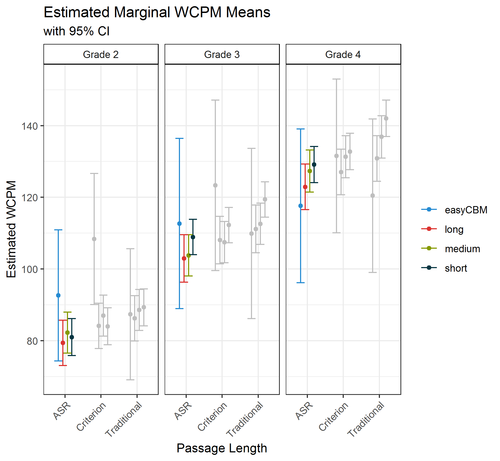

The purpose of this post is to determine whether there are passage length differences in WCPM between traditional CBM-R passages and shorter CORE passages.
We examined the differences in passage length for words correct per minute (WCPM) scores of curriculum-based measurement of oral reading fluency (CBM-R). The four passage lengths were: (1) easyCBM passages as traditional CBM-R passages of about 250 words read for 60 seconds; and CORE passages read in their entirety that were (2) long, about 85 words, (3) medium, about 50 words, and (4) short, about 25 words. We also explored the effect of scoring method using: (1) Traditional - the real-time human scores, akin to traditional CBM-R assessments in schools; (2) ASR - automatic speech recogntion scores; and (3) Recording - the criterion measure, where recorded audio files were scored by human assessors in a private space wearing headsets (with the ability to rewind, replay, and adjust audio). Results for effects of scoring methods can be found here.
These results are part of our larger Content & Convergent Evidence Study. For details about the Content & Convergent Evidence Study procedures, including information on the sample, CBM-R passages, administration, and scoring methods, go here.
When using ASR scoring – as previously established is acceptable – there are no statistically significant differences in WCPM based on passage length, suggesting that the WCPM scores of the shorter CORE passages are generally comparable to the scores on traditional CBM-R passages. These findings provide preliminary evidence that shorter passages can be administered in schools as part of CBM-R assessment practrices.
This finding has the potential to make a sizable contribution to the field under the idea that traditional CBM-R administration can be made even briefer (e.g., 30 seconds), saving time and resources.
Using multiple shorter CBM-R passages also has the potential the increase the reliability and reduce the standard error of WCPM scores, much like increasing the number of items on a test increases the reliability properties of the test. Increased reliability of CBM-R scores would provide educators with more accurate scores with which to monitor student CBM-R progress over time, and thus increase the consequential validity of the decisions based on those scores.
We applied a mixed-effects model for WCPM scores separately for each of Grades 2 through 4, with random effects for students and passages, and fixed effects for passage length (four levels: easyCBM, short, medium, and long), scoring method (three levels: ASR, Recording, and Traditional), and their interaction passage length:scoring method. For documentaiton of the model building process go here.
wcpm ~ 1 + (1|student_id) + (1|passage_id) +
passage_length + scoring_method + passage_length:scoring_method, REML = FALSE))The following table shows the results of this model.
| Grade 2 | Grade 3 | Grade 4 | |||||||
|---|---|---|---|---|---|---|---|---|---|
| Estimate | SE | t-value | Estimate | SE | t-value | Estimate | SE | t-value | |
| Fixed Effects | |||||||||
| Intercept1 | 108.36 | 9.33 | 11.61 | 123.30 | 12.13 | 10.17 | 131.53 | 10.94 | 12.03 |
| Long | -24.27 | 9.30 | -2.61 | -15.27 | 12.30 | -1.24 | -4.50 | 10.99 | -0.41 |
| Medium | -21.41 | 9.20 | -2.33 | -15.85 | 12.18 | -1.30 | -0.24 | 10.93 | -0.02 |
| Short | -24.38 | 9.11 | -2.68 | -11.08 | 12.09 | -0.92 | 1.22 | 10.82 | 0.11 |
| ASR | -15.72 | 2.63 | -5.98 | -10.63 | 3.15 | -3.38 | -13.90 | 3.62 | -3.84 |
| Traditional | -20.99 | 2.63 | -7.98 | -13.42 | 3.15 | -4.26 | -11.09 | 3.62 | -3.06 |
| Long:ASR | 11.00 | 2.84 | 3.87 | 5.52 | 3.30 | 1.67 | 9.77 | 3.75 | 2.60 |
| Medium:ASR | 10.98 | 2.76 | 3.98 | 6.94 | 3.24 | 2.14 | 9.91 | 3.72 | 2.67 |
| Short:ASR | 12.70 | 2.69 | 4.72 | 7.29 | 3.20 | 2.28 | 10.27 | 3.67 | 2.80 |
| Long:Traditional | 23.12 | 2.84 | 8.13 | 16.55 | 3.30 | 5.02 | 14.88 | 3.75 | 3.96 |
| Medium:Traditional | 22.59 | 2.76 | 8.19 | 18.53 | 3.24 | 5.71 | 16.64 | 3.72 | 4.48 |
| Short:Traditional | 26.30 | 2.69 | 9.77 | 20.58 | 3.20 | 6.43 | 20.36 | 3.67 | 5.55 |
| Random Effects (SD) | |||||||||
| Students | 37.76 | – | – | 34.59 | – | – | 38.23 | – | – |
| Passages | 8.84 | – | – | 11.76 | – | – | 10.40 | – | – |
| Residual | 18.22 | – | – | 20.05 | – | – | 20.33 | – | – |
| 1 Intercept represents easyCBM passages with Traditional scores. | |||||||||
Based on the model’s results, we calculated pairwise comparisons from the estimated marginal means to examine the effects of passage length.
The figure below shows the estimated marginal WCPM means for each passage length by grade and scoring method. The 95% confidence intervals for all comparisons overlap, suggestig that the estimated WCPM scores across passage length are relatively comparable.

To assist the interpretation of the results of the final model, we also report the statistical significance of the differences in marginal means, as well as Cohen’s (1988) d effect size estimates in the table below.
None of the pairwise comparisons (across grades and scoring methods) between the CORE passages (long, medium, and short) and traditional easyCBM passages were statistically significant at the p = .01 level, except for two Recording criteria WCPM scores (Grade 2 easyCBM-long and easyCBM-short), and one Traditional WCPM score for Grade 4 long-short.
An examination of the magnitude of the effect sizes across all scoring methods showed that the largest absolute differences were between the easyCBM and short or medium length passages. The smallest absolute differences were between the long and medium length passages for Grades 2 and 3, and between the medium and short in Grade 4.
In general, the estimated mean WCPM differences and effect sizes are larger when comparing easyCBM passages to CORE passages. But while the effect size differences increased across Grades 2 to 3 to 4, the opposite pattern was observed for the estimated differences, because the SE remained relatively stable across grades (for the pairwise comparison estimates and d).
Importantly, the ASR results (top of the table below) provide evidence that when using ASR scoring there were no statistically significant differences in WCPM based on passage length.
Thus, the scores the shorter CORE passages were generally comparable to the scores on the traditional easyCBM passages.
| Grade 2 | Grade 3 | Grade 4 | |||||||||||||
|---|---|---|---|---|---|---|---|---|---|---|---|---|---|---|---|
| Estimate | SE | z-value | p-value | Effect Size | Estimate | SE | z-value | p-value | Effect Size | Estimate | SE | z-value | p-value | Effect Size | |
| ASR | |||||||||||||||
| easyCBM - long | 13.27 | 9.30 | 1.43 | .154 | -0.15 | 9.75 | 12.30 | 0.79 | .428 | -0.27 | -5.27 | 10.99 | -0.48 | .632 | -0.67 |
| easyCBM - medium | 10.44 | 9.20 | 1.13 | .257 | -0.18 | 8.91 | 12.18 | 0.73 | .465 | -0.27 | -9.67 | 10.93 | -0.89 | .376 | -0.75 |
| easyCBM - short | 11.68 | 9.11 | 1.28 | .200 | -0.05 | 3.79 | 12.09 | 0.31 | .754 | -0.34 | -11.50 | 10.82 | -1.06 | .288 | -0.69 |
| long - medium | -2.83 | 2.83 | -1.00 | .317 | -0.04 | -0.84 | 3.56 | -0.24 | .814 | -0.01 | -4.40 | 3.21 | -1.37 | .170 | -0.11 |
| long - short | -1.59 | 2.54 | -0.63 | .531 | 0.08 | -5.96 | 3.23 | -1.84 | .065 | -0.11 | -6.23 | 2.82 | -2.21 | .027 | -0.11 |
| medium - short | 1.24 | 2.13 | 0.58 | .559 | 0.12 | -5.12 | 2.75 | -1.86 | .063 | -0.11 | -1.82 | 2.53 | -0.72 | .471 | 0.00 |
| Recording | |||||||||||||||
| easyCBM - long | 24.27 | 9.30 | 2.61 | .009 | 0.17 | 15.27 | 12.30 | 1.24 | .214 | -0.11 | 4.50 | 10.99 | 0.41 | .683 | -0.41 |
| easyCBM - medium | 21.41 | 9.20 | 2.33 | .020 | 0.12 | 15.85 | 12.18 | 1.30 | .193 | -0.08 | 0.24 | 10.93 | 0.02 | .983 | -0.49 |
| easyCBM - short | 24.38 | 9.11 | 2.68 | .007 | 0.26 | 11.08 | 12.09 | 0.92 | .359 | -0.16 | -1.22 | 10.82 | -0.11 | .910 | -0.45 |
| long - medium | -2.86 | 2.83 | -1.01 | .313 | -0.04 | 0.58 | 3.56 | 0.16 | .871 | 0.03 | -4.26 | 3.21 | -1.33 | .184 | -0.11 |
| long - short | 0.11 | 2.54 | 0.04 | .964 | 0.12 | -4.19 | 3.23 | -1.30 | .195 | -0.07 | -5.72 | 2.82 | -2.03 | .042 | -0.09 |
| medium - short | 2.97 | 2.13 | 1.39 | .164 | 0.16 | -4.77 | 2.75 | -1.74 | .083 | -0.10 | -1.46 | 2.53 | -0.58 | .563 | 0.01 |
| Traditional | |||||||||||||||
| easyCBM - long | 1.15 | 9.30 | 0.12 | .901 | -0.46 | -1.28 | 12.30 | -0.10 | .917 | -0.53 | -10.38 | 10.99 | -0.94 | .345 | -0.74 |
| easyCBM - medium | -1.17 | 9.20 | -0.13 | .898 | -0.45 | -2.68 | 12.18 | -0.22 | .826 | -0.54 | -16.40 | 10.93 | -1.50 | .133 | -0.82 |
| easyCBM - short | -1.92 | 9.11 | -0.21 | .833 | -0.34 | -9.51 | 12.09 | -0.79 | .431 | -0.60 | -21.58 | 10.82 | -1.99 | .046 | -0.83 |
| long - medium | -2.33 | 2.83 | -0.82 | .411 | -0.02 | -1.40 | 3.56 | -0.39 | .695 | -0.02 | -6.02 | 3.21 | -1.88 | .060 | -0.14 |
| long - short | -3.07 | 2.54 | -1.21 | .226 | 0.04 | -8.22 | 3.23 | -2.54 | .011 | -0.15 | -11.20 | 2.82 | -3.97 | < 0.001 | -0.20 |
| medium - short | -0.74 | 2.13 | -0.35 | .728 | 0.06 | -6.83 | 2.75 | -2.48 | .013 | -0.14 | -5.18 | 2.53 | -2.05 | .041 | -0.07 |
The research reported here was supported by the Institute of Education Sciences, U.S. Department of Education, through Grant R305A140203 to the University of Oregon. The opinions expressed are those of the authors and do not represent views of the Institute or the U.S. Department of Education.